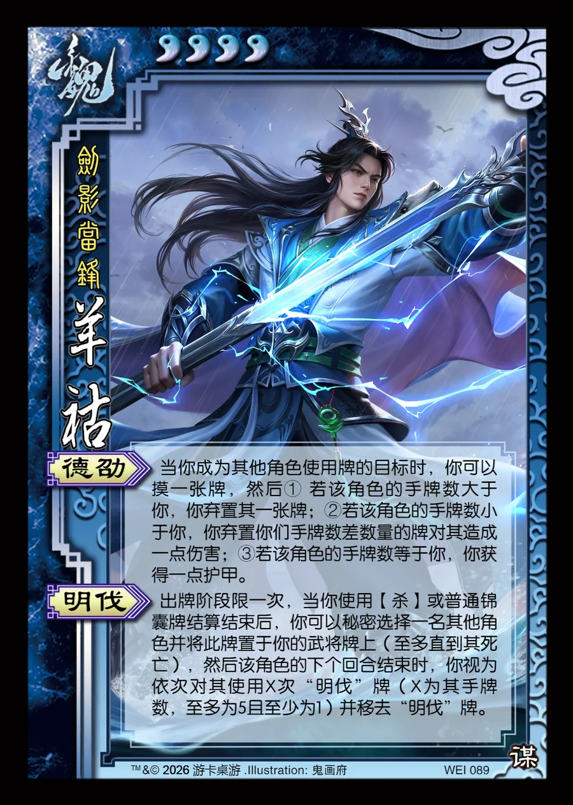

点击卡面查看大图
魏
羊祜
♥4剑影当锋
德劭
当你成为其他角色使用牌的目标时，你可以摸一张牌，然后① 若该角色的手牌数大于你，你弃置其一张牌；②若该角色的手牌数小于你，你弃置你们手牌数差数量的牌对其造成一点伤害；③若该角色的手牌数等于你，你获得一点护甲。
明伐
出牌阶段限一次，当你使用【杀】或普通锦囊牌结算结束后，你可以秘密选择一名其他角色并将此牌置于你的武将牌上（至多直到其死亡），然后该角色的下个回合结束时，你视为依次对其使用X次“明伐”牌（X为其手牌数，至多为5且至少为1）并移去“明伐”牌。